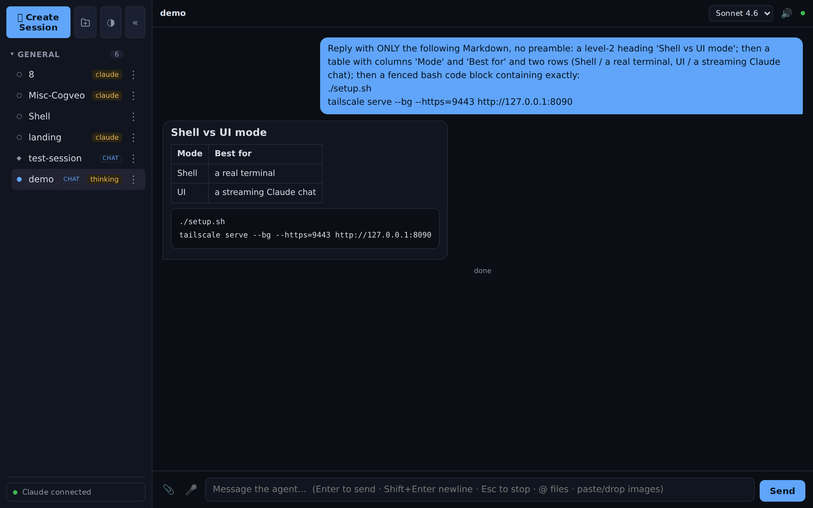
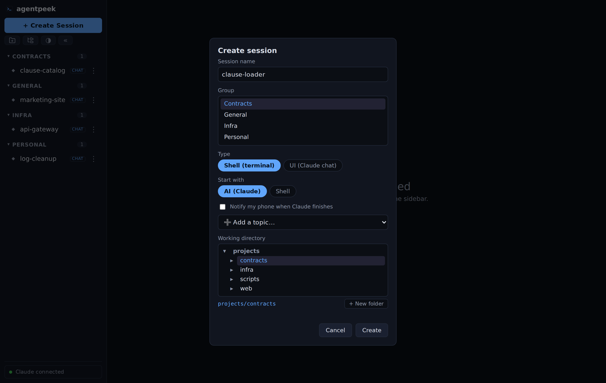

Why agentpeek exists
You start Claude Code in a terminal. Then you close your laptop — and the session is gone.
So you SSH back in from your phone and fight with tmux on a tiny screen, trying to
find the session you lost.
agentpeek turns those sessions into persistent, browser-accessible workspaces. They keep working when you close the laptop — open a tab from any device and you're right back in.
Why not just SSH?
SSH and tmux can do this — if you enjoy the fight. agentpeek is that same persistence, with a UI actually built for it.
| SSH + tmux | agentpeek | |
|---|---|---|
| Interface | Terminal only | Terminal and a Claude chat |
| On mobile | Painful | Built for the browser |
| Find a session | Remember its name | Visual session manager |
| Reconnect | SSH back, re-attach by hand | Open a browser tab |
| Files & input | Type paths by hand | @-mention, image paste, voice |
| Keeps running | tmux, configured yourself | Built in — never stops |
Two ways to drive an agent
🖥️ Shell — a real terminal
- Named, persistent tmux sessions with unlimited scrollback
- Select-to-copy, native browser scrollback, no copy-mode dance
- Reach the exact same session over SSH with
tmux attach - An "AI" start option that launches your own command (claude, aider…)
💬 UI — a streaming Claude chat
- The Claude Agent SDK: it edits files and runs commands, as chat
- Token-streamed replies with rendered Markdown, tables & code
- Inline tool activity, a message queue, Stop / Esc to interrupt
- @-mention files, paste/drop images, voice in & out, model picker
What you get
🔄 Sessions that persist
Named tmux sessions and always-on background agents survive a closed tab or a hopped device — pick up exactly where you left off.
💬 Streaming Claude chat
UI mode runs the Claude Agent SDK: token-by-token replies, rendered Markdown and tables, inline tool calls, queue and interrupt.
📎 @-mention, paste & voice
Reference files with @, paste or drop images for vision, dictate with your mic, and have replies read back.
🗂️ Folders & working dirs
Group sessions into collapsible folders, move sessions between them, and launch each one in any project directory under your tree.
🔔 Phone notifications
Opt a session in to a free ntfy push and get a ping on your phone every time Claude finishes a turn — pick or add a topic right in the create dialog.
📱 Works on your phone
A touch key bar gives a terminal the keys a soft keyboard can't — esc, tab, ctrl, arrows, scroll and paste — all routed through tmux, so it's reliable on iOS Safari.
☁️ First-party, Bedrock or Vertex
Use your Claude Pro/Max subscription, an Anthropic API key, AWS Bedrock, or Google Vertex AI.
🔐 Self-hosted & private
Binds to localhost, exposed only over your Tailscale tailnet, with optional password login. Nothing is public.
See it in action


Companion app
🪟 Pairs with filepeek
agentpeek is where the work happens — you drive the agents that generate your docs, code, and reports. filepeek is the downstream viewer that renders the Markdown, HTML, and Office files those agents leave behind. Run them with agentpeek, read them with filepeek — both self-hosted, both reachable over your tailnet.
Quick start
Linux / WSL2
cd ~ && git clone https://github.com/thrinz/agentpeek.git && cd agentpeek
./setup.sh
# reach it on your tailnet (HTTPS, tailnet-only):
tailscale serve --bg --https=9443 http://127.0.0.1:8090Open http://localhost:8090 — on WSL2 that works straight from your Windows browser.
On Debian/Ubuntu, setup.sh installs everything for you — tmux, ttyd, Claude
Code, a Python venv and the systemd services — and offers to install Tailscale. You'll
need systemd enabled on WSL2, and the repo on the Linux filesystem (not a
/mnt/c Windows drive) — see the
full prerequisites.
Ports clashing (another service or WSL distro)? Run with
AGENTPEEK_PORT=9090 AGENTPEEK_TTYD_PORT=9091 ./setup.sh.
macOS
# prerequisite: Homebrew (https://brew.sh) and Python 3.10+
git clone https://github.com/thrinz/agentpeek.git && cd agentpeek
./setup-macos.sh
# → open http://localhost:8090The app is identical on macOS; only the installer differs. setup-macos.sh
brew installs tmux and ttyd, installs Claude
Code (skipped if already present), creates the venv, and installs three background
launchd agents into ~/Library/LaunchAgents
(dev.agentpeek.tmux, dev.agentpeek.ttyd, dev.agentpeek.app).
launchd is macOS's equivalent of systemd: the agents run in the background and
start automatically when you log in (no linger needed). It also prompts for a login
password and a projects folder (or set AGENTPEEK_PROJECTS_DIR=…). Same port overrides
apply, and Tailscale for macOS +
tailscale serve work exactly as above.
Manage it with launchctl — the systemctl equivalent:
launchctl print gui/$(id -u)/dev.agentpeek.app # status
launchctl kickstart -k gui/$(id -u)/dev.agentpeek.app # restart
launchctl bootout gui/$(id -u)/dev.agentpeek.app # stop
tail -f ~/Library/Logs/agentpeek/app.log # live logsDocker (any OS, incl. Windows)
docker pull ghcr.io/thrinz/agentpeek:latest
# Pro/Max subscription — no API key; sign in from the in-app Claude chip after it starts:
PROJECTS_DIR=~/projects docker compose up -d
# …or use an Anthropic API key for UI (chat) mode:
PROJECTS_DIR=~/projects ANTHROPIC_API_KEY=sk-ant-... docker compose up -d
# → http://localhost:8090A prebuilt multi-arch image (linux/amd64 + linux/arm64) is published to the
GitHub Container Registry, so agentpeek runs anywhere Docker does — Linux, macOS, or
Windows (Docker Desktop runs the Linux container on Mac/Windows); it's also the only way to
run it on Windows natively. The API key is optional: leave it out and sign in with
your Pro/Max subscription from the in-app Claude chip (it persists in the
~/.claude volume), or mount your host ~/.claude to reuse an existing login.
docker-compose.yml
mounts your projects tree and keeps app state (~/.config/agentpeek) and Claude
auth (~/.claude) in named volumes. It binds 127.0.0.1 on purpose — reach it
over your tailnet, never the open internet. The compose file also runs
filepeek as a companion container (its own
image, on :8765) so you can browse the files the agent produces — remove that service
if you don't want it.
Frequently asked questions
Which AI agents does it run?
UI (chat) mode runs Claude Code through the Claude Agent SDK — the same agent that edits files and
runs commands, rendered as a streaming chat. Shell mode is a real terminal that can run any
program; its "AI" start option launches your own command (e.g. claude, aider).
Do sessions keep running if I close the browser?
Yes. Terminal sessions are plain named tmux sessions, and UI-mode agents run as always-on background processes. Close the tab, open it on another device, and pick up where you left off.
How do I reach it from my phone?
Over your Tailscale tailnet. agentpeek binds to localhost and you expose it with one
tailscale serve command — HTTPS, tailnet-only, never the public internet.
Can I use my Claude subscription?
Yes — sign in with your Pro/Max subscription from inside the app (the same OAuth flow as the terminal), or use an Anthropic API key, or point it at AWS Bedrock or Google Vertex AI.
Which platforms does it run on?
Linux and WSL2 (systemd user services), macOS (setup-macos.sh — Homebrew + launchd
agents), and anywhere via the prebuilt multi-arch Docker image — which is also the only way to run
it on Windows natively. On WSL2 it opens straight from your Windows browser and auto-starts on
boot.
What if agentpeek runs on the laptop itself?
Nothing is lost — tmux sessions and background agents survive sleep and resume when the machine wakes. But a sleeping machine does no work: for sessions that keep running with the lid shut, host agentpeek on a machine that stays awake — a desktop, home server, WSL2 machine, or a small cloud VM (there's a one-shot deploy script) — or set your laptop to stay awake on lid-close while plugged in. Your laptop is then just another browser onto the same sessions.
Does it run in the background and start automatically?
Yes. On Linux/WSL2 it's a systemd user service (auto-starts at boot via linger); on
macOS it's a launchd background agent (auto-starts at login — manage it with
launchctl, the systemctl equivalent); in Docker the container runs with
restart: unless-stopped. Terminal sessions are even recreated after a reboot or
container restart, and AI sessions resume their Claude conversation when you reopen them.
Is it free?
Yes — free and open source under the MIT license.